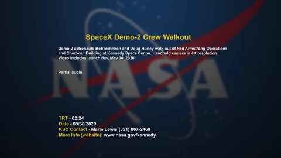
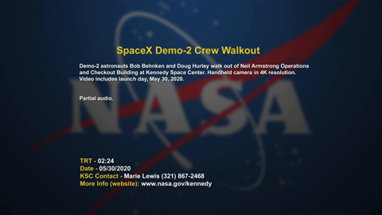
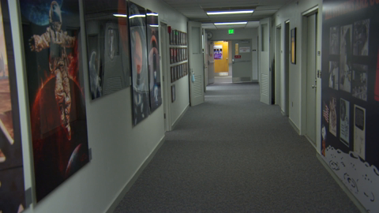

Frame 14 · PTS 86016 · 5.6 s
63f2719d91d866533fa93d90d97430cb4d7cd25e864cd2a5aed3f1f251543131
walkout-preview.mp4 sha256:66f807b947e6e7e4e9e1538f6d11018b6bba05691ef7c8a868a6a5e2c49b567d · completed · MIGraphX GPU
Single-shot IoU tracks, IDs scoped to this run. Sampled center transitions only; no continuous-presence proof, identity recognition, detection-quality or safety qualification.
PTS time base 1/15360; event times are sampled bounds. Dwell is the span between observed inside centers, not proof of continuous presence. All events need review. No encoded video clip or audio is exported.
Run f9cc456668054fa589fde812a32ca40e
Input b3e0b3b90ace9078badd36ca1d8a16b01b3e4a785e9f31665e8d27d23e7ef723
Recipe 7eaf2caf38a8a29133600f820328aaa84f75ad4e417becd44b1274f166394322
Source media SHA-256 66f807b947e6e7e4e9e1538f6d11018b6bba05691ef7c8a868a6a5e2c49b567d
Original media PTS = reported PTS - (0); original first PTS 0. Decoder and selected-frame provenance.
Recorded decoder provenance and selected frame byte/PTS mappings checked. Original media/tool binaries are not reread during analysis; not publisher authenticity or event-quality evidence.
| Event | Rule / Track | PTS / Seconds | Sampling interval | Evidence |
|---|
7dd7cb572c42641afc819685204c9f5217beffe8c5a4592fe3afecebf79ff5ee
0571b50550d3b46da123ee6e0aa2dee65d26b539d3da215bf817e7637cae39070382cb59d0b7c2133433653b289dd59ebf56c51604328ea9f18d080b2fec4b9e14b9d2333dadecad314caef9b57993d9b72fc9c40cf7f79d2e93797097c3213d8d5752eb4a75fa95bc305be28a43acb53c10d407a30b94bd6b708b27b3ec25bf9b199765135c3e3f65f6f0fe90cd924a41344af6a62b5e82b29ee74580f259f0
4885b7a0651cf73bfa3467c1f4c1b0e3f442be7b72e179453c6c924d5d154067b32299147e60d03829824ae5a433f33237698e2ee87485396a456d252ae93ff5c60d621bfd6873cb5d6095166c178f5e07225c263f37000d3de9c2da94a6981994ea6432e530bd83b053b18a9d89a61aa6b2b9f5407ebb2cbfee1750521bd8ba7fe44e8522aa83780b408ad4a661ac772e3512b7b602fa13f503064f7307a2ab100ee6e83b9b5d3dc1619055992710f5641663a56903a4d12f4393b5df49fe495af848ce468bc1082ef455825a5c15f2dbe0c9c964a269b15eea194e36a55b2763f2719d91d866533fa93d90d97430cb4d7cd25e864cd2a5aed3f1f25154313163f2719d91d866533fa93d90d97430cb4d7cd25e864cd2a5aed3f1f25154313163f2719d91d866533fa93d90d97430cb4d7cd25e864cd2a5aed3f1f251543131
63f2719d91d866533fa93d90d97430cb4d7cd25e864cd2a5aed3f1f251543131
63f2719d91d866533fa93d90d97430cb4d7cd25e864cd2a5aed3f1f251543131
6a124dbe3314b4bafc624d912fb5bb0877d634c9091996841e59b8850d60ff03
10093febaaa49ebdf39080c62895e2a48c817ae9f8125c70681b9acf5e36343a